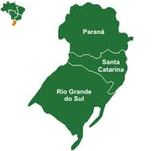

Produção de Café no Brasil em Toneladas
|
|
|
|||
|---|---|---|---|---|
| Região | Estado | 2016 | 2017 | |
| Sul | RS | 5000 | 8000 |  |
| PR | 25000 | 25878 | ||
| SC | 15878 | 14858 | ||
| Sudeste | SP | 12000 | 14000 |

|
| MG | 258000 | 354000 | ||
| ES | 58787 | 65897 | ||
| Centro-Oeste | MT | 0 | 987 |

|
| MS | 878 | 0 | ||
| Total | 528543 | 618507 | ||